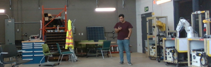
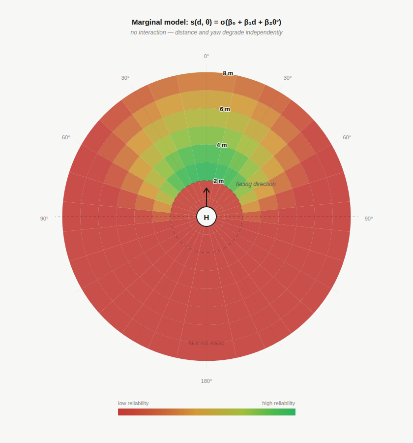
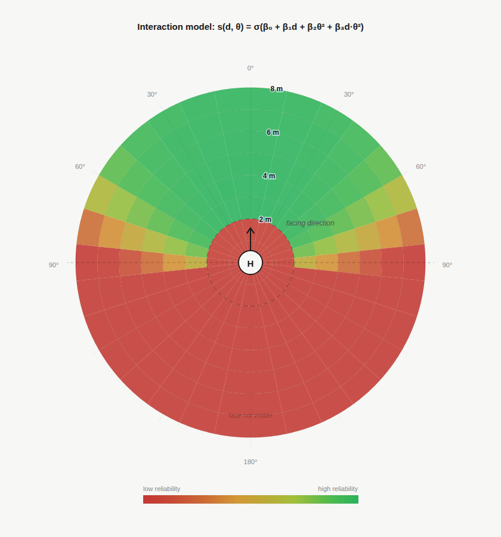
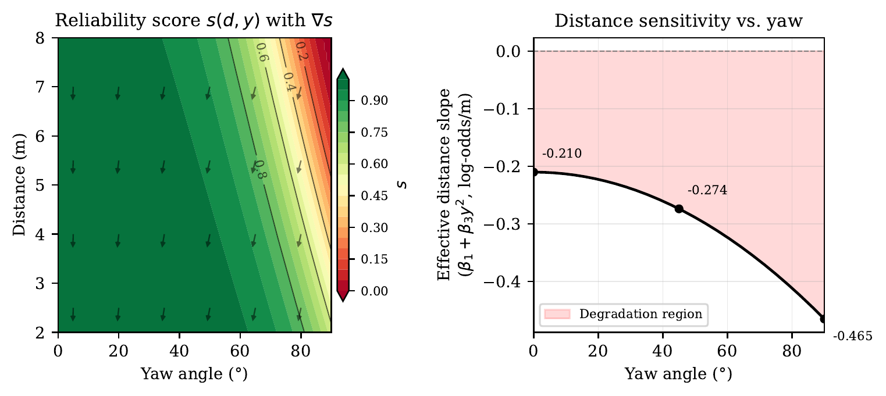
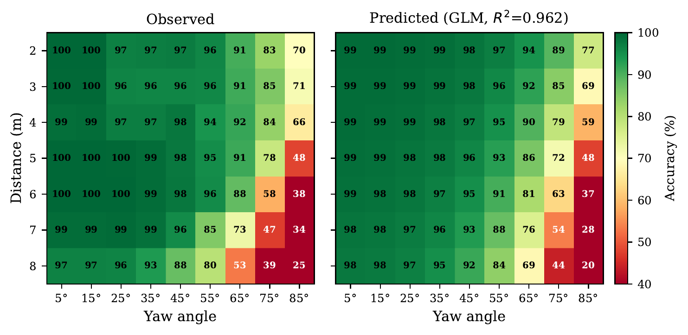
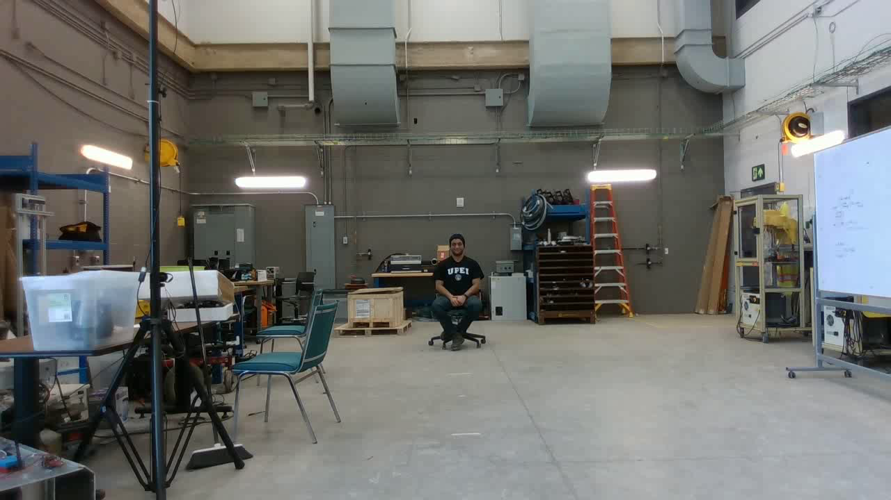
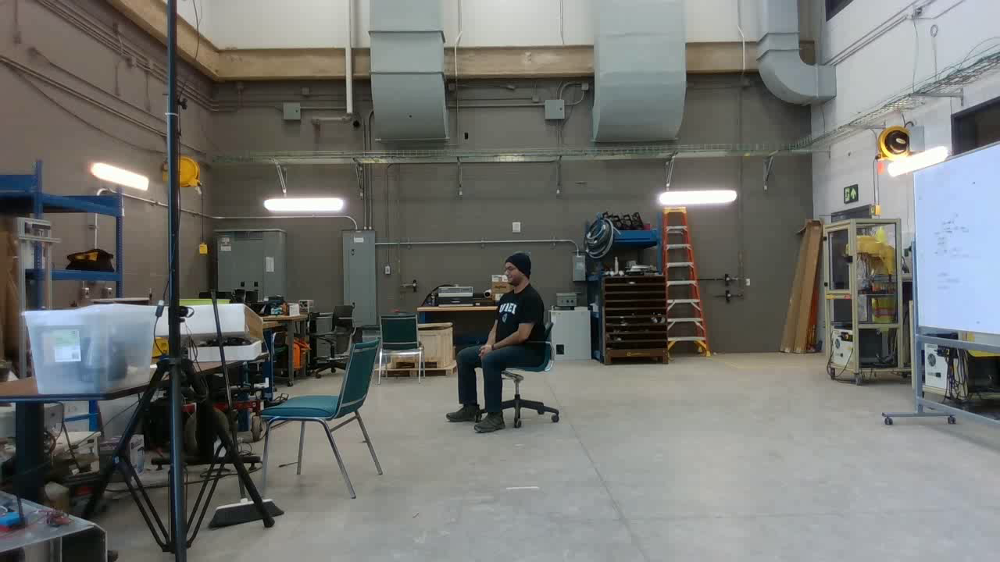

s
Geometry
Geometry reliability
Can this viewpoint even support recognition? Computed from distance & yaw before capture.
Teaching a social robot to notice when it is poorly positioned to read a face, and to act on that self‑assessment.
A service robot reads a face from whatever vantage point it happens to have. When the person is far away or turned aside, the face region shrinks to a handful of pixels, yet the recognition model keeps returning confident answers. This work builds a geometry‑aware reliability signal so the robot can tell why its own reading might be wrong, and then trust it, reposition, or fall back to other cues.

The model still outputs a confident label. But the face is ~24 pixels wide, oblique, self‑occluded. Was that a smile, a grimace, or nothing at all? The robot has no way to know that its own perception is unreliable.
Can this viewpoint even support recognition? Computed from distance & yaw before capture.
Is a face observable in this frame? Isolates environmental failure: mask, glare, or occlusion.
Interpretable only after the first two pass; at that point it reads affect rather than artifact.
At 2 m, the pixel budget comfortably absorbs the self-occlusion that comes with an oblique view. Accuracy stays near‑ceiling at every angle we tested.
At 8 m, the same 60° of yaw becomes catastrophic. The face can no longer spare the information loss, and the softmax gives no warning.
We call this the information capacity effect. It makes a geometry‑conditioned reliability score both possible and necessary. Prior work on situated FER did not quantitatively model this coupling.



The bold term is the whole story: the penalty the robot pays for being another metre further away grows sharply with how far off-axis the face is turned. Four parameters, fit on 63 (distance, yaw) cells.

Genuine expression. Incorporate it into the social-reasoning loop.
Follow ∇s: circle toward a frontal view before closing distance.
Environmental failure. Use alternative cues or a verbal probe.
A working draft of the preliminary manuscript is available for reading or download below. It contains the dataset description, preprocessing pipeline, GLM fit, and the derivation of the policy thresholds. Expect a fuller treatment to appear post‑Expo.
These are single‑subject pilot recordings from the reliability‑surface experiment. They are unedited, not especially cinematic, and included here in the interest of transparency, so you can see the two extremes of the (distance, yaw) grid in motion.

